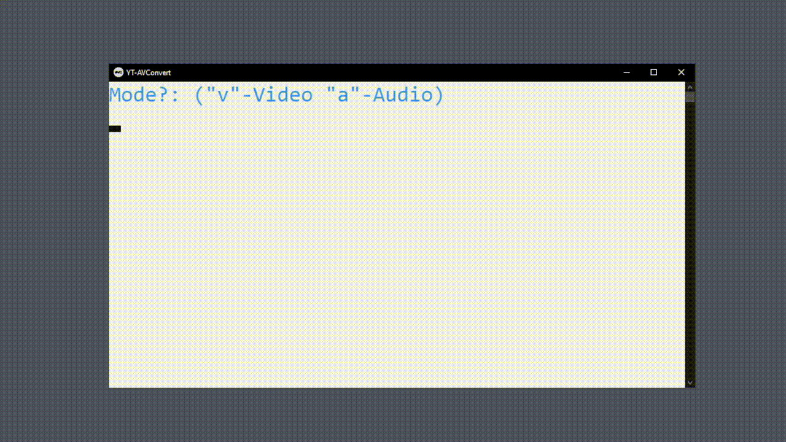

Youtube Video/Audio Convert Tool
YT-AVC is a tool written in batch for converting youtube to audio and video.
There's no need to go around malicious websites anymore.
It is fast and efficient, and gets the job done in a few seconds. Locally! On your computer!

It uses YT-DLP and FFMPEG to convert and trim files to be used.